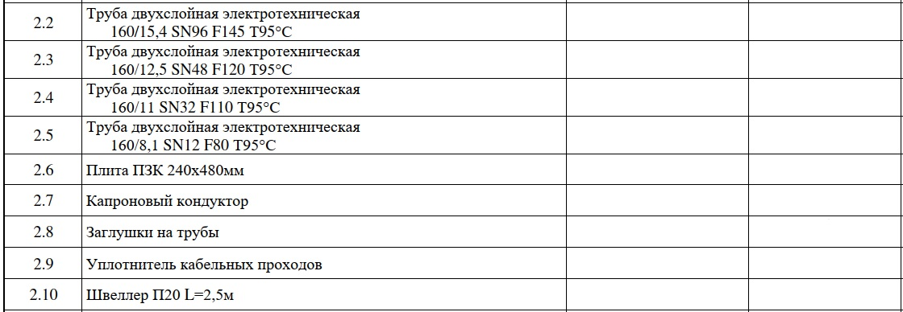
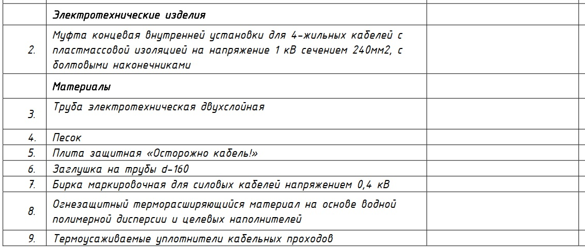
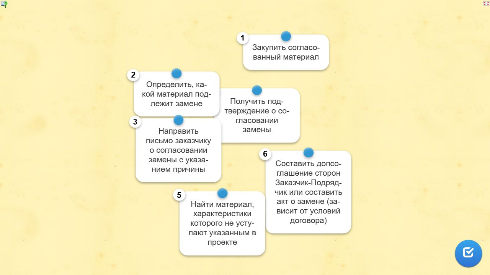

Как сдать объемы выполненных работ заказчикуЛокальный архив курса
МИКРОКУРСЫ. 2026 · Как сдать объемы заказчику
В каких случаях необходимо оформлять изменения проекта
Вера СафуановаЭксперт строительного контроля с опытом работы в строительной сфере более 15 лет
Когда в процессе строительства произошли изменения проектных решений, то их необходимо официально оформить. При проверке выполнения я обязательно замечу разницу между ИД и проектом. Например:
Замена материалов и оборудования
Изменение траектории прокладки линейных сооружений
Отклонение планово-высотного положения конструкций
Изменения в требованиях НПА или СТО Заказчика в процессе производства работ.
Посмотрите короткое видео о том, как правильно и неправильно вести себя при замене материалов.
Зачастую изменения выявляются в процессе подготовки ИД, поскольку материалы и оборудование заказывает отдел снабжения или сам производитель работ, а данные не своевременно передаются в отдел ПТО.
Сразу перейдем к практике. Хочу проверить, как вы разбираетесь в вопросе замены проектных решений. Ваша задача — изучить документы и определить, в каких случаях необходимо вносить изменения в проект.
Определите, в каких случаях необходимо вносить изменения в проект
Исходные карточки для самопроверки. Локальная страница не оценивает ответы.
1. Требуется ли в данном случае вносить изменения в проект?
Да
Нет
Ответ, помеченный в данных источника
Да
2. Требуется ли в данном случае вносить изменения в проект?
Да
Нет
Ответ, помеченный в данных источника
Да
3. Требуется ли в данном случае вносить изменения в проект?
Да
Нет
Ответ, помеченный в данных источника
Нет
Источник и ограничения. Статическое содержание не проверяет ответы и не воспроизводит анимацию.
Но также встречаются спецификации, которые не дают полной картины для применяемых материалов. В таких случаях изменения в ПД не требуются. Я подготовила для вас примеры таких спецификаций.
Карточки для самопроверки
Данные исходных карточек. Здесь ответы не проверяются.
1. Пример 1
Смотреть ответ
Ответ и пояснение, помеченные в источнике
Смотреть ответ
На рисунке не указаны производители материалов, но указаны технические характеристики. В таком случае главная задача – подобрать материал с характеристиками, которые будут соответствовать ПД и РД
2. Пример 2
Смотреть ответ
Ответ и пояснение, помеченные в источнике
Смотреть ответ
В данном случае нет характеристик, которые уточняют, какой именно материал может быть применен при производстве работ. В таком случае необходимо обращаться к проектировщику для уточнения данного вопроса


Источник и ограничения. Статическое содержание не проверяет ответы и не воспроизводит анимацию.
Изменения проекта оформляйте официально. Это станет вашей защитой в спорных ситуациях.
При наличии авторского надзора нужно привлечь его представителя для внесения изменений в проектную документацию.
Если авторский надзор на объекте отсутствует, изменения вносятся в порядке, установленном договором с заказчиком, что может оформляться служебной запиской или актом технической необходимости. Я подпишу акт отступлений от проекта в последнюю очередь, потому что не имею права вносить изменения в проект.
Перейдем от слов к делу. Хочу проверить, как вы вносите изменения в проект. Укажите правильную последовательность действий при замене материала на этапе закупки.
Передача исполнительной документации на подпись
Снимок исходного упражнения. Перетаскивание, выбор и проверка ответа требуют LearningApps.

Передача исполнительной документации на подпись · статический снимок.Доступный текст исходного упражнения
Составить допсоглашение сторон Заказчик-Подрядчик или составить акт о замене (зависит от условий договора)
Получить подтверждение о согласовании замены
Определить, какой материал подлежит замене
Найти материал, характеристики которого не уступают указанным в проекте
Направить письмо заказчику о согласовании замены с указанием причины
Закупить согласованный материал
Источник и ограничения. Статическое содержание не проверяет ответы и не воспроизводит анимацию.
Все служебные письма и акты технической необходимости прикладываются в том ИД на данные работы и вносятся в реестр ИД.
Не устали? Вот еще одна задача. Перед вами упражнение, в котором вам нужно доказать замену производителя трубы.
Карточки для самопроверки
Исходные карточки для самопроверки. Локальная страница не оценивает ответы.
1. В ходе строительства выяснилось, что производитель работ использовал другой материал без уведомления заинтересованных лиц. При подготовке исполнительной документации ПТО установил этот факт, при этом работы уже завершены. Какие аргументы будут существенны при согласовании такой замены?
Работы выполнены. Замена приведет к срыву ввода объекта строительства
Характеристики примененной трубы не уступают по качеству той, что указана в проекте
Согласовывать без определения причин
Замена не повлечет изменения сметной стоимости строительства
Ответ, помеченный в данных источника
Характеристики примененной трубы не уступают по качеству той, что указана в проекте; Замена не повлечет изменения сметной стоимости строительства
Источник и ограничения. Статическое содержание не проверяет ответы и не воспроизводит анимацию.